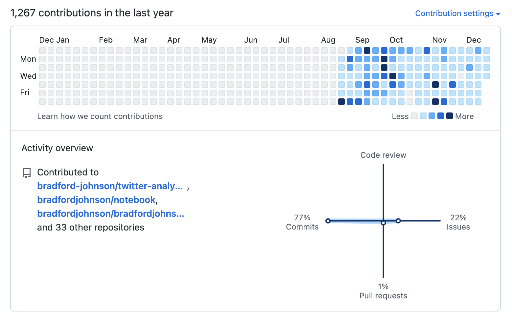

Teaching myself R
Why R?
I was first exposed to R in a statistics course in college. Having some previous coding experiences with HTML, CSS, and C++ I was able to pick up R pretty quickly. In this course we only used a couple functions as an aid for our course work. Essentially we manually created vectors, found the standard deviation, conducted T-tests and Chi-squared tests. We never made visuals or really went deeper into R. This class was remote and during COVID-19, so instead of turning in notes or homework physically we emailed in pictures of our handwritten work.
This was fine but I did not like drawing box plots manually. I ended up finding a tutorial for making a box plot with R, and I started turning in my drawings by exporting the .png files and emailing them. My professor thought I was an expert data analyst and we would talk data after our class meetings.
Here is my first visual ever made using R, and it probably took me 30+ minutes to make, troubleshoot and figure it all out:
The satisfaction of this and praise really got me motivated to keep going. After I got tired of box plots, I wanted to plot crime data on a map. This was a big part of my learning as I was a criminology concentration within sociology, so it was very applicable to what I liked. I found crime data and shape files from the City of Atlanta and that is how I spent my summer in 2021.
Here is one of the “final” versions of the homicide map for Atlanta, GA:
After summer I took a break from R during my last semester at Winthrop and picked it back up in December 2021.
I do not have many visuals from this time saved as I was working on learning the tidyverse and manipulating data. Most of my time was spent watching tutorials and replicating those methods with my own data. I worked on linear regression, t-tests, and learning functions.
Here is one visual I found from this time:
Fast forward to February 2022, I started working at Topgolf, and I worked from 5am-1pm and spent most my time after work using and learning R. I kept trying to find data around me at work to analyze when I got home. I watched days worth of tutorials and kept up the grind. I decided I was very serious about data and in June I enrolled in Thinkful’s Data Analytics bootcamp.
My time at Thinkful was great, I had an awesome mentor and would come home from Topgolf and learned more about using Excel, SQL, Tableau, and finally Python. I did all of this while still working 5am-1pm and once I completed my daily Thinkful lessons I opened up RStudio and continued learning. In July is when I started using GitHub in a more serious way, and I liked to try to contribute R code everyday to continue learning.
I will not lie, looking back I am surprised I was able to stay quite motivated doing so much everyday. I definitely would feel burnt out here and there but I wanted to improve my craft. My mentor really kept me motivated and in a true learning mindset. Yaron is a data analyst, and my mentor. His background in Python was great for me to learn it from him. I would also send him R scripts and he would send me Python scripts from our projects we were working on. This was a very cool experience and we really motivated each other in the data and learning realms.
Here’s one of my R visuals from this time period:
I was getting better and learning more, however with my perfectionist mindset I created a new GitHub account because I missed a daily contribution while on vacation. I have since come to terms with this, as it is not good to force progress with such high work loads, however this was one of my motivation factors at the time.


In October of 2022 I was promoted to IT Team Lead at Topgolf, and in the following December I graduated the Thinkful program. From here I began really improving my learning of R, I had a playlist of tutorials on YouTube saved and I continued finding projects to work on. I decided one way to learn and continue was TidyTuesday, which is a weekly social data project where a new dataset is posted every Tuesday, and using the tidyverse framework you clean, wrangle and visualize the data with R. My new years resolution for 2023 is to do every TidyTuesday this year. So far I am on track for this goal and this community is awesome!
You can view my TidyTuesday visuals here on my website or on my GitHub here.
Moving on to now, I have been able to continue learning R working on various projects and visuals. I still watch tutorials and read books related to R but I found reading code to be very helpful in learning. When I see a visual I like, or something I want to know how to do when viewing R visuals on Twitter or LinkedIn I look at the creators code. Often times people share the code on GitHub or if you ask, and this has really helped me progress and learn many different ways to approach visualizing data or wrangling data.
When I see a data visual I like, I save a picture of it in a local folder. I do this as a way to keep track of things that can inspire me or motivate me. I found this as another way to learn or “keep things fresh”.
Now my most recent visual:

It is crazy to see my progress over this time frame, and it is hard to realize in the moment. It really takes looking at my plots over time and seeing the results. This is another thing I found helpful…
SAVE EVERYTHING. I wish I saved more in the past, but being able to look back at an old script, or old visual can show you your progress but also help you stay motivated.
Conclusion
In conclusion I think these are the most helpful things in my journey of learning R (in no specific order):
Doing relevant projects
- Whatever is on your mind, interests you, or applicable to a role you want
Tutorials
- Following along is fine at first, but try using tutorials as a reference to apply methods to your own projects
Making mistakes
- Being in the code editor as much as possible
Avoid learning alone
- This can be hard, but finding learning communities, posting updates, having a mentor or friend is very helpful for feedback and support
Taking breaks
- Making time for family, friends, and yourself…
Setting goals
- Make them realistic and personal, also do not compare yourself to others and their work, you are your hardest critic, and learning does not happen over night.
My girlfriend and mom both remind me of the progress I have made and how “Rome was not built in a day”, and this is true.
The last thing I found very influential was from a video about creating reports with Quarto on YouTube.
- If you do something, and do not share it or talk about it, it is like it does not exist.
While this seems obvious, it was something that once I heard I took to heart and what motivated me to make this blog.